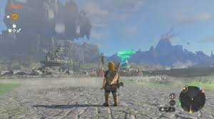
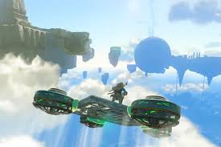

The Legend of Zelda: Tears of the Kingdom
The Legend of Zelda: Tears of the Kingdom es la secuela muy esperada de The Legend of Zelda: Breath of the Wild, lanzada para la Nintendo Switch. Al igual que su predecesor, este juego ha sido muy anticipado debido a su popularidad, su influencia en la industria de los videojuegos, y su capacidad para redefinir lo que puede ser un juego de mundo abierto. Aqui te doy un resumen sobre que trata el juego, que tan bueno es, y una opinion general al respecto.
¿De que trata Tears of the Kingdom?
Tears of the Kingdom sigue la historia de Link, el heroe principal, mientras intenta salvar el Reino de Hyrule de una nueva amenaza. La trama se desarrolla tras los eventos de Breath of the Wild, donde se descubre un misterioso poder que pone en peligro todo el mundo. El juego se centra en el conflicto entre Link, la princesa Zelda, y las fuerzas oscuras que amenazan con sumergir Hyrule en la destruccion. Uno de los elementos mas intrigantes de la historia es la presencia de las celdas del reino celeste y las tierras flotantes, lo que amplia la exploracion mas alla del mapa terrestre y permite a los jugadores viajar entre el cielo y la tierra. Zelda, como en la mayoria de los titulos de la saga, juega un papel importante, aunque no necesariamente como protagonista jugable en este caso.
 